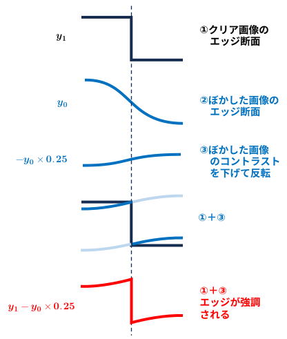
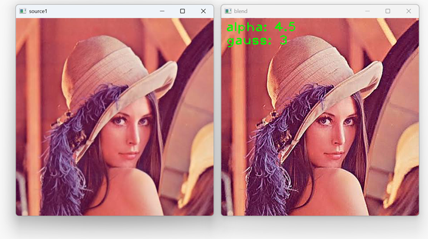

デジタル画像処理が実現される前の暗室テクニックで輪郭を強調する技法。
あくまで輪郭のコントラストを視覚的に強調して、人間の目に「くっきりして見える」ようにする処理。
アンシャープマスクの基礎となる技法を世界で最初に報告した（提案した）論文は、1931年にドイツの学術誌『Photographische Korrespondenz』に掲載された、Gottfried Spiegler（ゴットフリート・シュピグラー）とKalman Juris（カルマン・ユーリス）による以下の論文です。
『Ein neues Verfahren zur Herstellung ausgeglichener Kopien nach besonders harten Originalaufnahmen』
（特に硬調な原画から階調の整った複製を作るための新しい方法）
彼らはウィーンの放射線研究所に所属しており、元々はレントゲン（X線）写真の非常に暗い部分や明るい部分に隠れた診断上重要な詳細（ディテール）を、印刷・複製時に失わないようにする調子再現の技術としてこの方法を開発しました。当時は「アンシャープマスキング」という言葉自体は使われていませんでしたが、元の画像にあえてピントをぼかした（unsharpな）反転マスクを重ね合わせて露光するという、現在の処理のアルゴリズム的なルーツとなる暗室技法を初めてシステム化して発表しました。
その後、1944年にコダック社の研究者であったJohn A. C. Yule（ジョン・ユール）が、この技法を印刷分野における「鮮鋭度（輪郭）の強調」の目的で発展させ論文として発表したことで、現代のデジタル画像処理におけるエッジ強調フィルタとしての「アンシャープマスク」の形が定着していきました。
『Unsharp Masks and a New Method of Increasing Definition in Prints』 (1944)
ステップ 1： 「隙間」を開けて、ぼやけたポジ（マスク）を作る
まず、元の「シャープなネガフィルム」から、低コントラストの「ポジフィルム」を1枚複製します。
このとき、通常ならフィルムの乳剤面（画像が記録されている面）同士をピタッと密着させてクッキリ複製しますが、アンシャープマスクを作る際はあえて裏返しに重ねたり、間に薄いガラス板や透明なシートを挟んでわずかな隙間（空間）を作ったりしました。
この状態で上から光を当てて密着焼き（コンタクトプリント）をすると、光がわずかに拡散するため、元データと位置は完全に一致しているけれど、全体的にうっすらとピンボケしたポジフィルムができあがります。これが文字通りの「アンシャープ（ボケた）マスク（覆い）」です。
ステップ 2： ネガとボケたポジを精密に重ね合わせる
できあがった「ボケたポジ（マスク）」を、元の「シャープなネガ」の真後ろに正確に重ね合わせます（見当合わせ）。
• ネガ（陰画）： 明るい場所が黒く、暗い場所が透明
• ポジ（陽画）： 明るい場所が透明で、暗い場所が黒い
この性質の違う2枚が重なると、面積の広いなだらかな部分（低周波成分）は「ネガの黒」と「ポジの黒」が相殺し合い、光の通過量が減って全体のコントラストがマイルドに抑えられます。
ステップ 3： 印画紙に焼き付ける（エッジの強調）
この重なった2枚のフィルムに光を通し、引き伸ばし機を使って印画紙に焼き付けます。ここで魔法のような現象が起こります。
輪郭（エッジ）の部分だけは、ポジ側が「ボケてなだらか」になっているため、ネガのシャープな輪郭線と完全には重なり合いません。その結果、エッジの境界線の一方では光がより多く通り（より黒くなり）、もう一方では光が余分に遮られる（より白くなる）という現象が局所的に発生します。

この技法は明暗の差（ダイナミックレンジ）が激しすぎて印画紙にうまく収まらない写真のコントラストを抑えつつ、ディテールだけを際立たせるという、現代のHDR（ハイダイナミックレンジ）の先駆けのような役割も果たしていました。
(data/unsharp_masking/src/usm_sim.py)
(使い方)
・ python usm_sim.py (画像ファイル)
・ Gキー Gaussianフィルターのサイズを大きくする
・ gキー Gaussianフィルターのサイズを小さくする
・ 矢印キー ブレンド比率を上げ下げする
・ sキー 保存～終了
・ ESCキー 保存せずに終了
(コード断片)
import cv2
import numpy as np
alpha = 3.0
src1 = cv2.imread(argv[1]).astype(np.float32) / 255.0
src2 = cv2.GaussianBlur(src1, (G_SIZE, G_SIZE), 0)
# 元画像とぼかした画像を引く (alpha > 1なので引き算になる)
dst = alpha * src1 + (1.0 - alpha) * src2
# 0～255, uint8 画像に戻す
dst *= 255.0
dst = np.clip(dst, 0, 255)
dst = dst.astype(np.uint8)
(実行結果)
